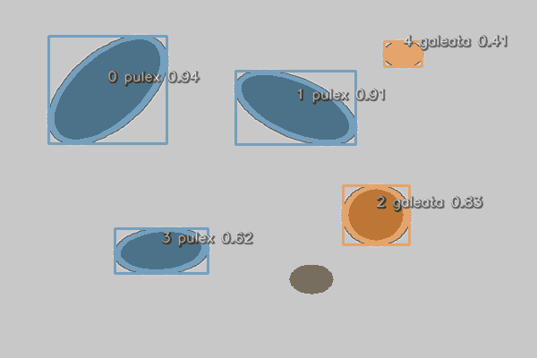
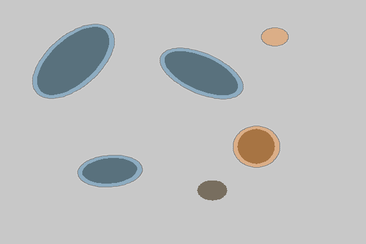
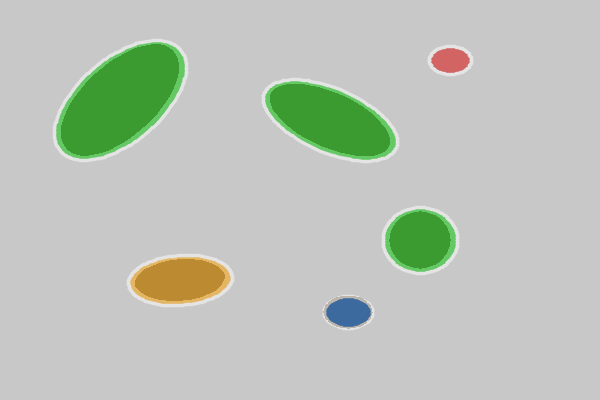
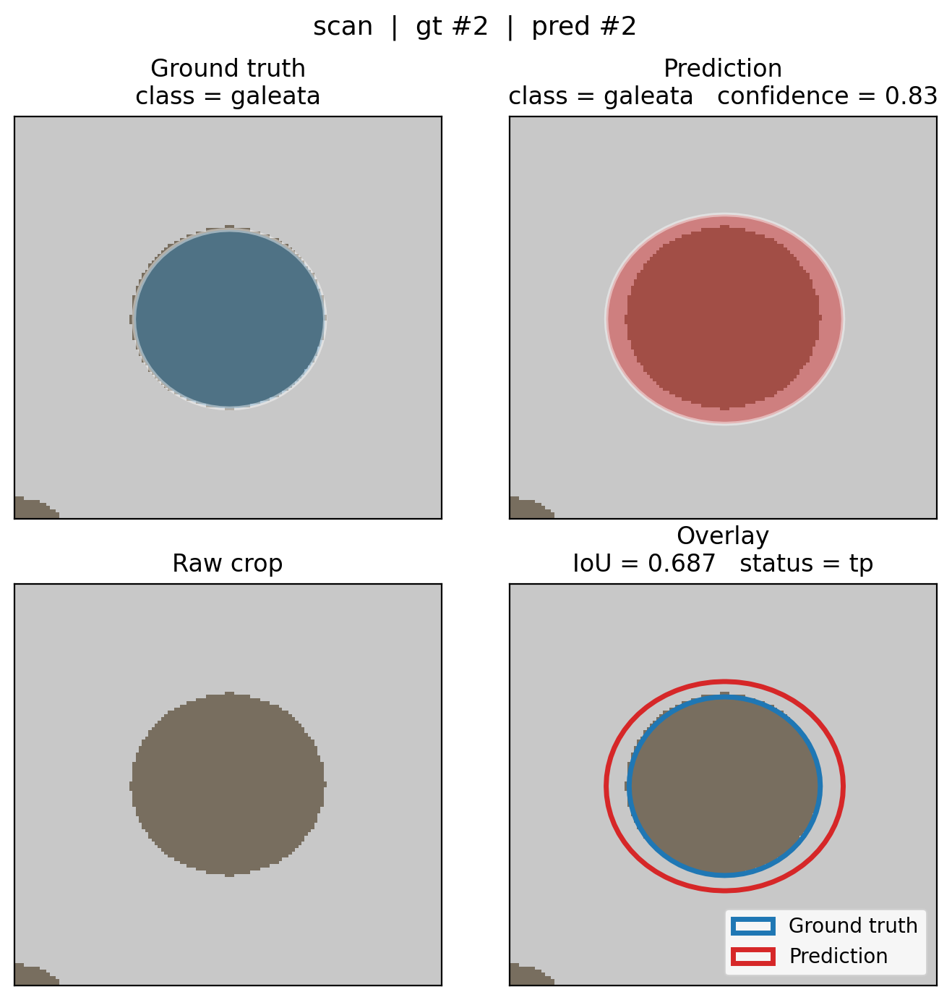
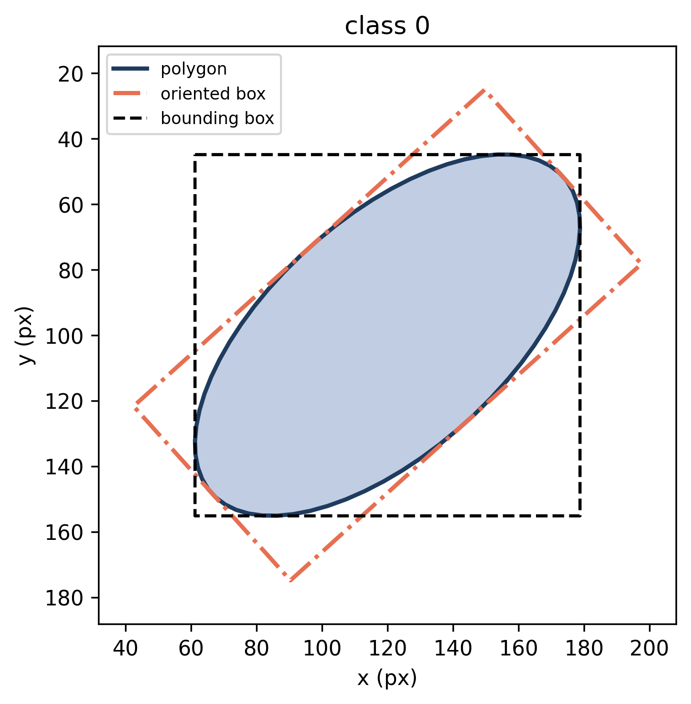
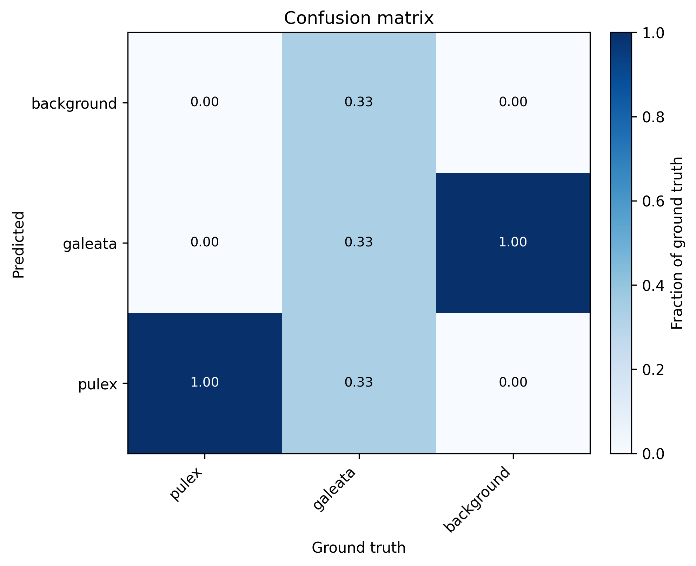
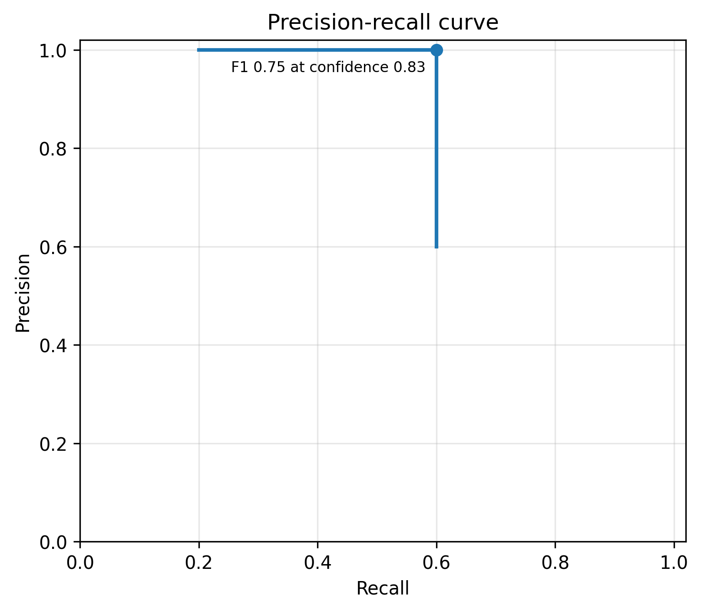
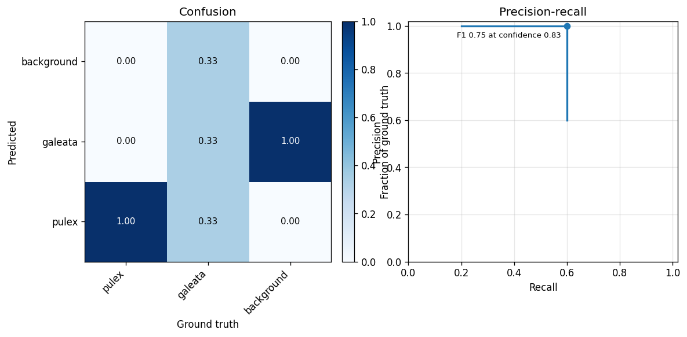

Visualisation¶
hires.plot draws annotations, match results and
evaluation charts. Two conventions hold throughout:
- Functions that draw on an image return an RGB
numpy.ndarray. - Functions that draw a chart return the Matplotlib
AxesorFigure.
No function calls plt.show(), and every function accepts save= to write
the result to a file. Every figure on this page was produced by the code
shown above it.
The example scan¶
To have something to draw, we make a small synthetic scan: a grey image
with five dark blobs, two of class 0 and three of class 1. With real data,
you would use the path of your scan and a collection from
hires.segment or hires.read_txt.
>>> import numpy as np
>>> import cv2
>>> from shapely.affinity import rotate, scale
>>> from shapely.geometry import Point
>>> import hires
>>> def blob(class_id, x, y, radius, stretch=1.0, angle=0.0):
... outline = rotate(scale(Point(x, y).buffer(radius), yfact=stretch), angle)
... return hires.Annotation(class_id, outline)
>>> gt = hires.Collection(
... [
... blob(0, 0.20, 0.25, 0.07, stretch=2.2, angle=30),
... blob(0, 0.55, 0.30, 0.06, stretch=2.0, angle=-50),
... blob(1, 0.70, 0.60, 0.05, stretch=1.4),
... blob(1, 0.30, 0.70, 0.05, stretch=1.5, angle=80),
... blob(1, 0.58, 0.78, 0.04),
... ],
... name="scan",
... image_size=(600, 400),
... )
>>> scan = np.full((400, 600, 3), 200, dtype=np.uint8)
>>> for a in gt:
... outline = np.array(a.to_pixels((600, 400)).exterior.coords, dtype=np.int32)
... _ = cv2.fillPoly(scan, [outline], (95, 110, 120))
The "predictions" are the same outlines, grown a little, with one object missing, one given the wrong class, and one spurious detection added:
>>> def predicted(a, confidence, class_id=None):
... return a.replace(
... polygon=a.polygon.buffer(0.012),
... confidence=confidence,
... class_id=a.class_id if class_id is None else class_id,
... )
>>> pred = hires.Collection(
... [
... predicted(gt[0], 0.94),
... predicted(gt[1], 0.91),
... predicted(gt[2], 0.83),
... predicted(gt[3], 0.62, class_id=0),
... blob(1, 0.75, 0.15, 0.035).replace(confidence=0.41),
... ],
... name="scan",
... image_size=(600, 400),
... )
>>> names = {0: "pulex", 1: "galeata"}
Annotations on an image¶
overlay fills each polygon in the colour of its
class, draws its bounding box and writes a label
index class confidence next to it:
>>> rgb = hires.plot.overlay(scan, pred, class_names=names, save="plot_overlay.png")
>>> rgb.shape, rgb.dtype
((400, 600, 3), dtype('uint8'))

The index is the position of the annotation in the collection, and for a collection read from disk, the line number in the label file. Use it to look an object up:
Each element can be switched off:
>>> _ = hires.plot.overlay(
... scan, pred, boxes=False, labels=False, alpha=0.35, save="plot_outlines.png"
... )

The first argument is either the path of an image file or an 8-bit BGR
array, as returned by hires.io.read_image. Reading a large scan once and
passing the array avoids decoding it again for every figure. To show the
result in a notebook or a window, hand the returned array to Matplotlib:
Colours are taken from hires.plot.PALETTE by class id and repeat after
ten classes.
Predictions versus ground truth¶
comparison colours each object by the outcome
of matching:
>>> matches = hires.metrics.match(gt, pred)
>>> matches.counts()
{'tp': 3, 'misclassified': 1, 'fp': 1, 'fn': 1}
>>> _ = hires.plot.comparison(scan, matches, save="plot_comparison.png")

| Colour | Status | Polygon drawn |
|---|---|---|
| Green | tp |
Prediction |
| Orange | misclassified |
Prediction |
| Red | fp |
Prediction |
| Blue | fn |
Missed ground truth |
For the result of matching two albums, select one image first with
matches.for_image(name). hires.evaluate writes this
image for every scan.
A single object¶
individual crops the image around one match and
draws four panels: the ground-truth mask, the predicted mask, the raw crop,
and both outlines together with the IoU and the match status.
>>> worst = matches.pick("tp", by="worst_iou")
>>> figure = hires.plot.individual(
... worst, scan, class_names=names, figsize=(7, 7), save="plot_individual.png"
... )

When the collections were read with their images (image= or
image_dir=), the image argument can be left out and is taken from the
match. For many figures of one scan, read the scan once and pass the
array, as here.
Close figures in loops
Matplotlib keeps every figure alive until it is closed. When producing
figures in a loop, call plt.close(figure) after saving:
To draw only the outline of one annotation, without an image, use
annotation. With obb=True it adds the minimum
rotated rectangle from which body length and width are measured, and with
bbox=True the axis-aligned bounding box:
>>> ax = hires.plot.annotation(
... gt[0], image_size=gt.image_size, obb=True, bbox=True, save="plot_annotation.png"
... )

Evaluation charts¶
Confusion matrix¶
>>> matrix = hires.metrics.confusion_matrix(gt, pred, class_names=names)
>>> matrix
pred pulex galeata background
gt
pulex 2 0 0
galeata 1 1 1
background 0 1 0
>>> ax = hires.plot.confusion_matrix(matrix, save="plot_confusion.png")

Each row is normalized to sum to one, so the diagonal reads as recall per
class. Pass normalize=False for raw counts.
Precision-recall curves¶
>>> curve = hires.metrics.precision_recall_curve(gt, pred)
>>> ax = hires.plot.precision_recall(curve, save="plot_pr.png")

The marker shows the point with the best F1. To compare several curves,
pass a dict of {label: curve}, for example one curve per class or one per
model:
>>> curves = {
... label: hires.metrics.precision_recall_curve(gt, pred, class_id=class_id)
... for class_id, label in names.items()
... }
>>> ax = hires.plot.precision_recall(curves)
Training curves¶
training_curves plots the training and
validation losses from the results.csv that Ultralytics writes during
training. With patience, a vertical line marks the best epoch, assuming
training was ended by early stopping.
>>> figure = hires.plot.training_curves( # doctest: +SKIP
... "runs/segment/train/results.csv", patience=50
... )
Composing figures¶
Chart functions accept ax=, so they fit into any Matplotlib layout:
>>> figure, (left, right) = plt.subplots(1, 2, figsize=(11, 4.5))
>>> _ = hires.plot.confusion_matrix(matrix, ax=left, title="Confusion")
>>> _ = hires.plot.precision_recall(curve, ax=right, title="Precision-recall")
>>> figure.savefig("plot_composed.png", dpi=120, bbox_inches="tight")

Working without a display¶
On a server or in a batch job, select a non-interactive Matplotlib backend before the first plot:
The hires command needs no such setup.
See also¶
- Reference:
hires.plot - Evaluation